Pway Class A - LU¶
1: Introduction¶
1.1: Definition of Permanent Way and Track¶
-
Permanent Way:
- All railway tracks in passenger service, the adjointing depots and sidings mostly electrified, timber / sleepers, cuttings, embankments, drainage and all associated features between and including the operational boundary fences.
-
Track:
- The permanent way and the ground within 2 m of any running rail, but exlcuing station platforms and areas guarded by physical barriar.
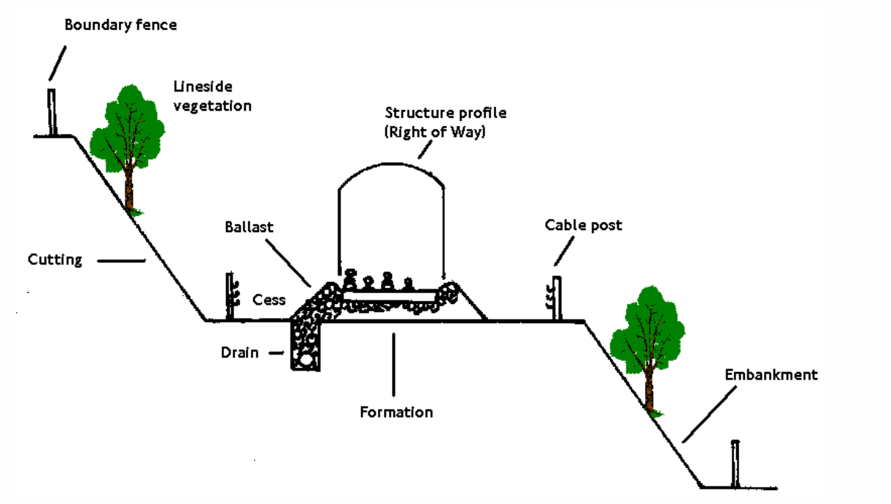
1.2: Main Components of PWay¶
- Running rails & joints
- Switches and corssings
- Rail fastening
- Sleepers and timbers
- Conductor rails and fittings
- Ballast and concrete
- Track Drainage
- Surface vegetation
- Boudndary fences
- Train arresters
- Structure gauge
1.3: Purpose of the PWay¶
- Support and guide the trains
- Provide a suitable running surface for wheels
- Provide adequate space for approved vehicles travelling at authorised speed
- Provide a suitable path for collector shoes
- Provide electrical paths & insulation for power and signalling
- Provide safe walking surface for maintenance / derailment
- Enable drainage of surface water
1.4: Platform Train Interface (PTI)¶
- Important to safety and service performance
- Maybe necessary to use special measures to fix the track position
- Preference is to standardise dimensions between tracks and platform edge, but this can result in sub-optimal solutions
1.5: Wheel Rail Interface (WRI)¶
- The wheel treads are tapered and the rails are inclined at 1 in 20 to provide self steering.
- The wheels have flanges which on tighter radius curves (radius approximately 400 metres)
- The shape of the rial head and wheel profile are very important, including track gauge and track geometry.
- Lubrication is provided by track lubricators and in some cases also train mounted lubricators.
1.6: Conductor Rail - Shoe Gear Interface¶
- Necessary to have gap in the consuctor rails and ramps to guide shoes on and off the rails.
- Most conductor rails are steel but aluminium rails with a stainless steel top surface are also used for higher conductivity.
1.7: Point Systems¶
- Provide motor drives, position detection and locking mechanisms.
- In LU, switch rails and stretcher bars are classfied as PWay assets and the drive, detection and locking system classified as Signal assets.
1.8: Track Condition Monitoring¶
Various condition measures are used for each form of degradtion:
- Irreversible Degradation:
- Running rail wear
- Running rail flaws
- Conductor rail wear
- Reversible Degradation:
- Running rail corrugation
- Loss of track geometry
- Ballast contamination (eg. wet beds)
LU PWay standards mandate a suite of inspections that provide information about track condition:
- Patrolling - visual
- Junctionwork Inspections - visual and measured
- Measured Inspections - work scoping
- Track Recording Vehicle (TRV), ATMS
- Rail Inspections - 'B' scan (ultrasonic), RSCM (magnetic flux)
- Prevention of Bukcling Inspections
2: Plain Line & Junctionwork¶
2.1: Running Rails¶
- Purpose - to carry and guide the train wheels
- Required to distribute significant forces
- Properties:
- Hardness - to resist wear
- Toughness - to absord load and resist fatigue
- Tensile strength - to withstand thermal forces
- Also used to locate signals equipments
- Material Most Used:
- Normal Grade steel - historical used
- Grade A steel - standard use
- Premium Steels & Head Hardened - wear resistant
2.2: Track Forms¶
-
Bullhead (BH) - Traditional
-
Flat Bottom (FB) - New Works
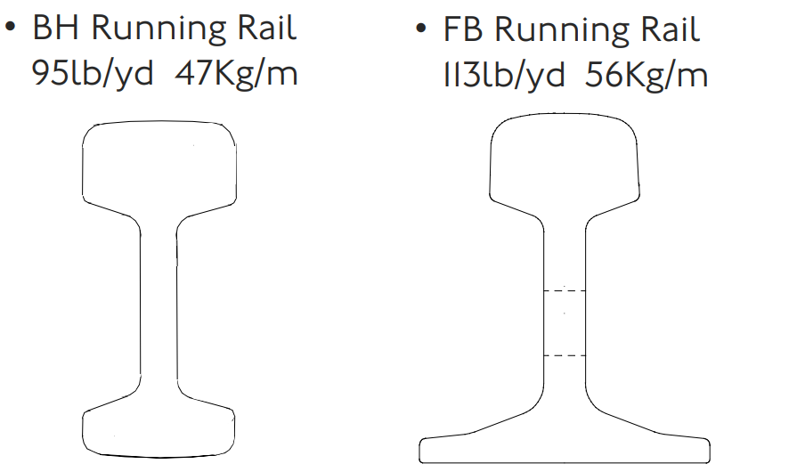
- General Track Guage:
- Straight Track: 1435 mm
- Check Rail Curves: 1438 mm
2.3: Running Rail Joints¶
- Purpose - to connect together lengths of rail to form a secure path
- Welded Types:
- Flash butt weld (workshop process)
- Thermic (site welding process)
- Fishplated (mechanical connection):
- Expansion (for short rails)
- Tight
- Junction
- Blockjoint
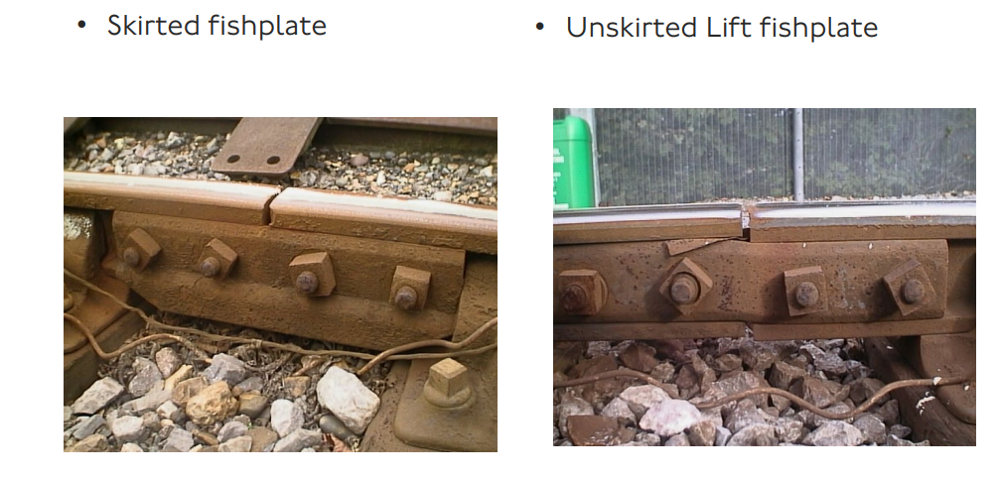
2.4: Sleepers¶
- Purpose - to maintain gauge
- Maintain dimension between rails
- Maintain coss level
- Support running and conductor rails
- Distribute dynamic and static loads
2.4.1: Sleepers Type¶
- Softwood - ballasted track only
- PRO: inexpensive, lightweight
- AGAINST: Easy to splitting and rotting
- Hardwood - ballasted and mainly concreted track
- PRO: duarbale, lighter than concrete
- AGAINST: exotic and expensive
- Composite
- FOR: Eco-friendly
- AGAINST: flammable, heat distortion
- Prestressed concrete - ballasted and concreted
- FOR: inexpensive, strong and stable
- AGAINST: very heavy, difficult to trim, brittle
2.5: Running Rail Supports and Fastenings¶
2.5.1: Bulkhead Track Keys¶
- Oak Keys:
- FOR - Eaasy to install, cheap, light and good electrical insulation
- AGAINST - Tend to shrink and fall out
- Steel:
- FOR - Wear resistance, easy to install, tight fitting, good creep resistance
- AGAINST - Need to be driven in tight, tendency to crush and fall out, tend to rust poor electricail insulation
- PANLOCK KEYS:
- FOR - secure location and low maintenance
- AGAINST - need special tool to install, tend to rust, poor electrical resistance
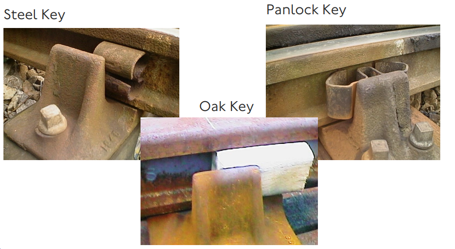
2.5.2: Chairscrews and ferrules¶
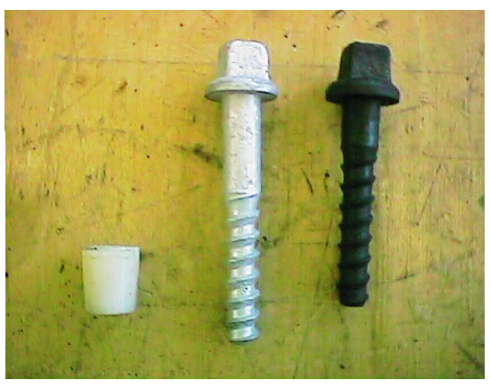
- Chairscrews: to hold the chair or baseplate securely to the sleepers. Restrains the rails and hold the gauge.
- Ferrules : accommodate casting tolerances in chair and baseplate. Prevent screw and metals to contact.
2.5.3: Flatbottom Track - rail clips¶
- Pandrol Clips
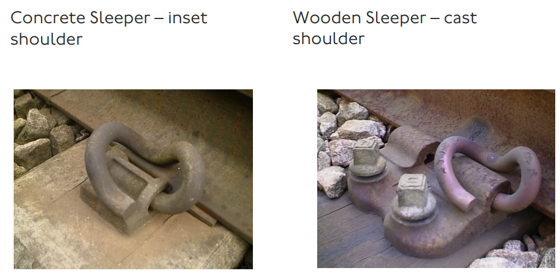
- Fastclips
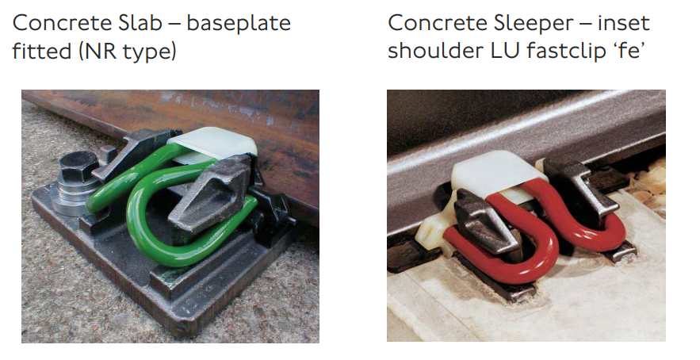
2.5.4: FB Rail vs BH Rail¶
- Flat Bottom rail:
- Baseplate with chairscrews and ferrules.
- Special baseplate for check rail.
- Pandrol shoulders casted into concrete sleepers.
- Pandrol with insulators and rail seat pad, directly seated on concrete sleepers.
- Bull Head Rail:
- Chairs with chariscrews, ferrules and keys
- Keys - oak or steel (two types: Mills and Panlock)
- Special Chairs for check rail
2.5.5: Resilient Baseplate - composite with rubber insert¶
- PRO:
- Reduced noise and vibration
- Longer lifetime
- DIS:
- Energy dissipation into noise
- Bulky component in space constained area
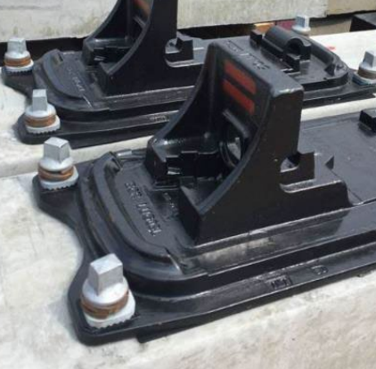
2.5.6: Track Bed¶
- Ballast:
- Purpose:
- To absorb and disperse track load through track foundations
- Restrain movement of sleepers
- Provide drainage
- Ballast Sleepers:
- Granite Ballast - preferred
- FOR - hard stay sharps, strong abration resistant
- AGAINST - heavy and expensive
- Limestone - was most common in LU
- FOR- cheap, resonable drainage
- AGAINST - scarce resorce in the UK, cannot be used with concrete sleepers
- Ash Ballast
- Waste product from coal power station. Mainly in depot.
- Typical Faults:
- Wet Spot: Train dynamic movement makes the underkying clay being drawn up into the ballast, thus blocks the drainage and loose the support.
2.6: General Track Construction¶
- 1: Geotexile laid on formation
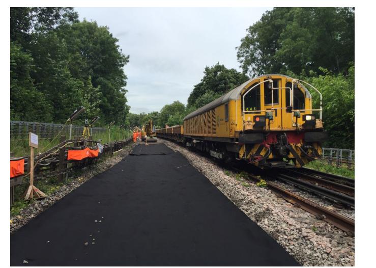
- 2: Bottom Ballast installation
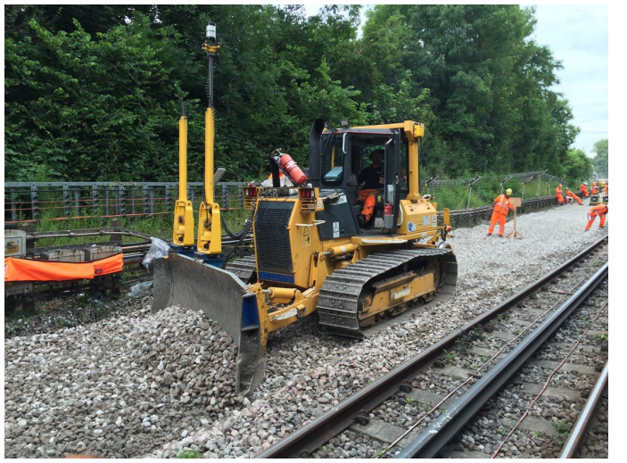
- 3: Concrete sleepers ready to lay
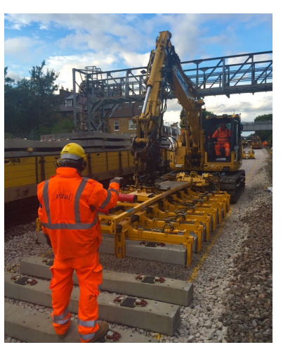
- 4: Sleeper laid Pandrol e-clip and fast clip
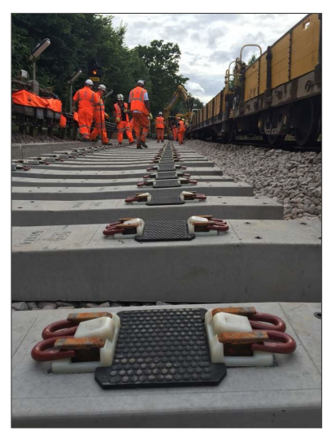
-
5: Rail Installation
-
6: Top Ballast Installation
-
7: Tamping
-
8: Welding and Stressing